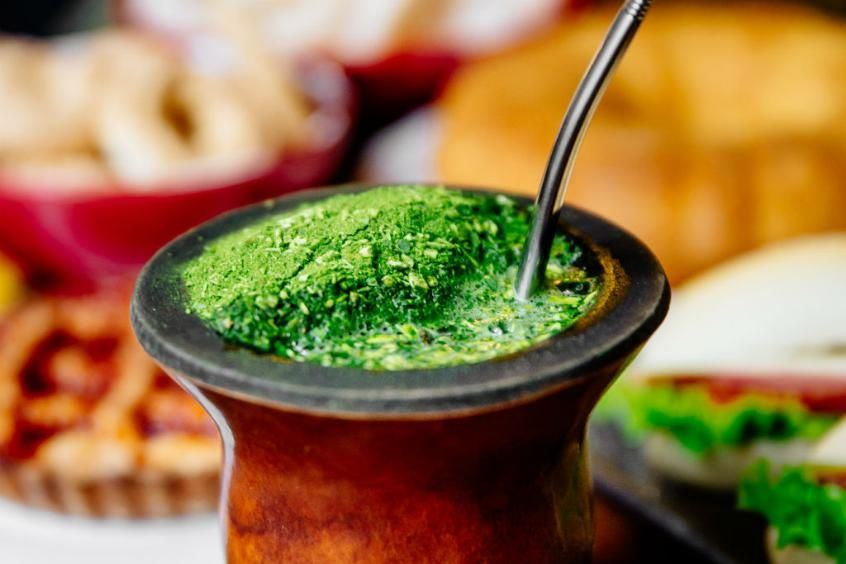
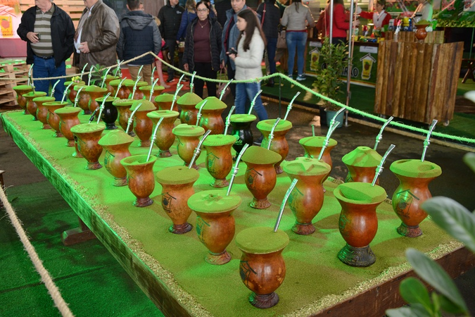

Sejam Bem Vindos ao meu Site
Escreva aqui uma apresentação inicial sobre o tema escolhido

contexto histórico
explique quanto, onde e como esse tema se desenvolveu no Paraná.
importancia cultural
explique a importância desse tema para a identidade cultural paranaense.
